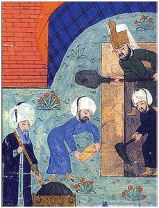

Dönemin padişahı Sultan II. Selim, Mimar Sinan’a şanına yakışır bir camii inşa etmesini buyurmuş. Sinan hemen kolları sıvamış Selimiye Camii’ni yapmaya başlamış. Temeller kazılmış, iskeleler kurulmuş... Çalışmalar sürerken Mimar Sinan bir gün elinde bir yumurtayla çıkagelmiş. Kendi kendine bir şeyler mırıldanıyormuş, aklından hesap yapıyormuş gibi bir hali varmış. Sonra eğilmiş ve yumurtayı inşaat kumuna kırmış ve başlamış karıştırmaya... Görenler şaşırmış tabii. Bir müddet sonra: “Tüm inşaatta bu harcı kullanacağız.” diye buyurmuş. Sırf bu harç meselesi için Edirne Karaağaç’ta bir çiftlik kurdurtmuş. 30.000 tavuğun her gün düzenli olarak yumurtaları toplanıp kumla ve kille karıştırılıp camide kullanılmış.

Osmanlı’da inşaat ustalarının çalışması